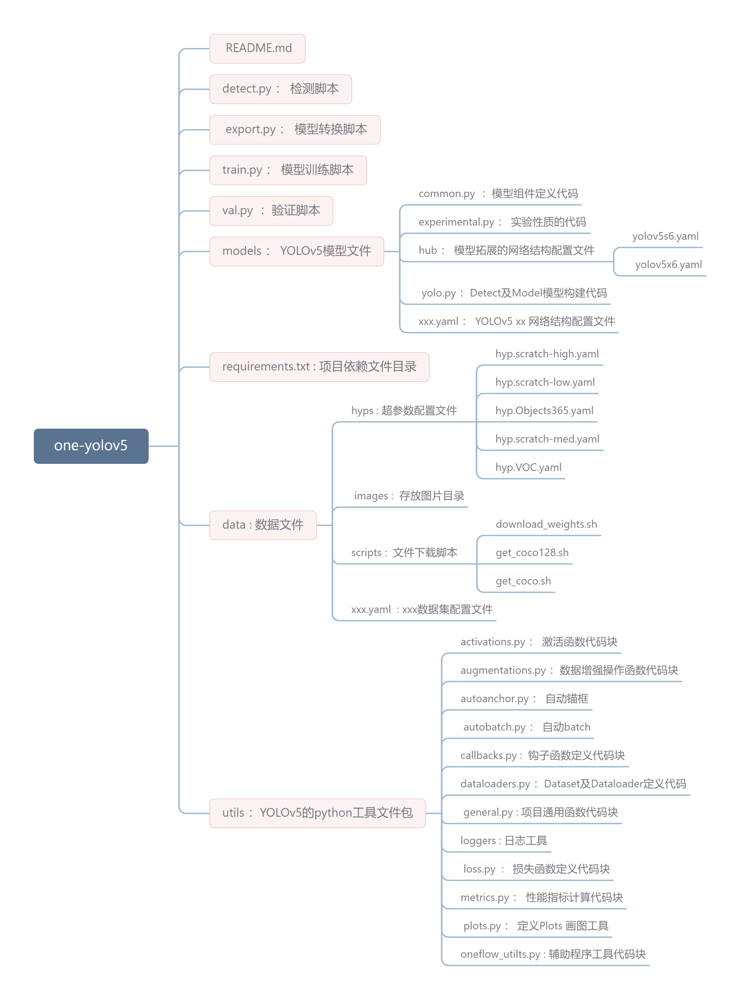

模型训练
📢 声明:Model Train(以coco数据集为例)
项目结构预览 🏠

训练指令(使用coco数据集为🌰)
📌两种训练方式
- 带权重训练 🚀
- 不带权重训练 🚀
📌单GPU训练
📌多GPU训练
$ python -m oneflow.distributed.launch --nproc_per_node 2 train.py --batch 64 --data coco.yaml --weights yolov5s --device 0,1
-
--nproc_per_node 指定要使用多少GPU。举个例子🌰:在上面👆 多GPU训练指令中它是2。
-
--batch 批处理数量（即一次训练所选取的样本数)。它将平均分配给每个GPU。在上面👆的示例中，每GPU分配 64/2＝32 个样本。
-
上面的代码默认使用GPU 0…（N-1）。使用特定的GPU🤔️？ 可以通过简单在 --device 后跟指定GPU来实现。「案例🌰」，在下面的代码中，我们将使用GPU 2,3。
📌使用SyncBatchNorm
SyncBatchNorm可以提高多gpu训练的准确性，但会显著降低训练速度。它仅适用于多GPU DistributedDataParallel 训练。
建议最好在每个GPU上的批处理数量较小（批处理数量<=8）时使用。
要使用SyncBatchNorm，只需将添加 --sync-bn 参数选项，具体「案例🌰」如下:
$ python -m oneflow.distributed.launch --nproc_per_node 2 train.py --batch 64 --data coco.yaml --cfg yolov5s.yaml --weights '' --sync-bn
📢 更多参数解析详见 附件表3.1。
训练结果🌟
📌本地日志
默认情况下，所有结果都记录为runs/train，并为每个新训练创建一个新的训练结果目录，如runs/train/exp2、runs/train/exp3等。查看训练和测试JPG以查看 mosaics, labels, predictions and augmentation 效果。 注意：Mosaic Dataloader 用于训练（如下所示），这是Ultralytics发表的新概念，首次出现在YOLOv4中。
train_batch0.jpg 显示 batch 为 0 的 (mosaics and labels):

val_batch0_labels.jpg 展示测试 batch 为 0 的labels:

val_batch0_pred.jpg 展示测试 batch 为 0 predictions(预测):

训练训损失和性能的指标有记录到Tensorboard和自定义结果中results.csv日志文件，训练训完成后作为结果绘制 results.png如下。在这里，我们展示了在COCO128上训练的YOLOV5 - 从零开始训练 (蓝色)。 - 加载预训练权重 --weights yolov5s (橙色)。

具体的指标分析详见YOLOv5中Loss部分计算
模型测试(val.py) 🔥
该命令在COCO val2017上以640像素的图像大小测试YOLOv5x。 yolov5x 是可用的最大且最精确的小模型。其它可用的是 yolov5s , yolov5m 和 yolov5l 或者 自己的检查点来自训练自定义数据集。./weights/best 。有关所有可用模型的详细信息，请参阅我们的 READEME table
模型预测🔥
训练技巧🔥
📢 声明：大多数情况下，只要数据集足够大且标记良好，就可以在不改变模型或训练设置的情况下获得良好的结果。 如果一开始你没有得到好的结果，你可以采取一些步骤来改进，但我们始终建议用户在考虑任何更改之前先使用所有默认设置进行一次训练。这有助于建立评估基准和发现需要改进的地方 🚀。
📌模型选择
类似于YOLOv5x和YOLOv5x6的大型模型在几乎所有情况下都会产生更好的结果，但参数更多，需要更多的CUDA内存进行训练，运行速度较慢。
对于移动部署，我们推荐YOLOv5s/m，对于云部署，我们建议YOLOV5l/x。
有关所有模型的完整比较，请参阅详细表

- 从预先训练的权重开始训练。建议用于中小型数据集（即VOC、VisDrone、GlobalWheat）。将模型的名称传递给--weights参数。模型自动从latest YOLOv5 releasse 下载 。
python train.py --data custom.yaml --weights yolov5s
yolov5m
yolov5l
yolov5x
custom_pretrained # 自定义的网络结构文件
- 从头开始训练的话，推荐用大的数据集(即 COCO、Objects365、OIv6 ) --cfg 后传递您感兴趣的网络结构文件参数 以及空的--weights ' ' 参数：
python train.py --data custom.yaml --weights '' --cfg yolov5s.yaml
yolov5m.yaml
yolov5l.yaml
yolov5x.yaml
📌训练配置
在修改任何内容之前，首先使用默认设置进行训练，以建立性能基线。训练参数的完整列表,能够发现在train.py文件中。 - Epochs : 默认训练300个epochs。如果早期过拟合，则可以减少训练。如果在300个周期后未发生过拟合，则可以训练更长，比如600、1200个epochs。 - Image size: COCO以 --img 640,的分辨率进行训练，但由于数据集中有大量的小对象，它可以从更高分辨率（如--img 1280）的训练中训练。 如果有许多小对象，则自定义数据集将从更高分辨率的训练中获益。最好的推断结果是在相同的--img 处获得的 ，即如果在-img 1280处进行训练，也应该在--img 1280处进行测试和检测。
- Batch Size: 使用更大的 --batch-size 。能够有效缓解小批量产生的batchnorm统计的错误。
- Hyperparameters： 默认超参数在hyp.scratch-low.yaml文件中。我们建议您在考虑修改任何超参数之前，先使用默认超参数进行训练。一般来说，增加增强超参数将减少和延迟过度拟合，允许更长的训练和得到更高mAP值。减少损耗分量增益超参数，如hyp['obj']，将有助于减少这些特定损耗分量中的过度拟合。有关优化这些超参数的自动化方法，请参阅我们的超参数演化教程。
拓展 📘
📌使用多机训练
这仅适用于多GPU分布式数据并行训练。
在训练之前，确保所有机器上的文件都相同，数据集、代码库等。之后，确保机器可以相互通信。
您必须选择一台主机器（其他机器将与之对话）。记下它的地址（master_addr）并选择一个端口（master-port）。对于下面的示例，将使用master_addr=192.168.1.1和master_ port=1234。
要使用它，可以执行以下指令：
# On master machine 0
$ python -m oneflow.distributed.launch --nproc_per_node G --nnodes N --node_rank 0 --master_addr "192.168.1.1" --master_port 1234 train.py --batch 64 --data coco.yaml --cfg yolov5s.yaml --weights ''
# On machine R
$ python -m oneflow.distributed.launch --nproc_per_node G --nnodes N --node_rank R --master_addr "192.168.1.1" --master_port 1234 train.py --batch 64 --data coco.yaml --cfg yolov5s.yaml --weights ''
其中G是每台机器的GPU数量，N是机器数量，R是从0到（N-1）的机器数量。
假设我有两台机器，每台机器有两个GPU，对于上面的情况，G=2，N=2，R=1。
在连接所有N台机器之前，训练不会开始。输出将仅显示在主机上！
注意⚠️
- oneflow目前不支持windows平台
- --batch 必须是GPU数量的倍数。
- GPU 0 将比其他GPU占用略多的内存，因为它维护EMA并负责检查点等。
- 如果您得到 RuntimeError: Address already in use ，可能是因为您一次正在运行多个培训。要解决这个问题，只需通过添加--master_port来使用不同的端口号，如下所示
结果💡
DDP 分析结果在AWS EC2 P4d instance with 8x A100 SXM4-40GB for YOLOv5l for 1 COCO epoch.
配置代码⚡
# prepare
t=https://github.com/Oneflow-Inc/one-yolov5:latest && sudo docker pull $t && sudo docker run -it --ipc=host --gpus all -v "$(pwd)"/coco:/usr/src/coco $t
pip install --pre oneflow -f https://staging.oneflow.info/branch/master/cu112
cd .. && rm -rf app && git clone https://github.com/Oneflow-Inc/one-yolov5 -b master app && cd app
cp data/coco.yaml data/coco_profile.yaml
# profile
python train.py --batch-size 16 --data coco_profile.yaml --weights yolov5l --epochs 1 --device 0
python -m oneflow.distributed.launch --nproc_per_node 2 train.py --batch-size 32 --data coco_profile.yaml --weights yolov5l --epochs 1 --device 0,1
python -m oneflow.distributed.launch --nproc_per_node 4 train.py --batch-size 64 --data coco_profile.yaml --weights yolov5l --epochs 1 --device 0,1,2,3
python -m oneflow.distributed.launch --nproc_per_node 8 train.py --batch-size 128 --data coco_profile.yaml --weights yolov5l --epochs 1 --device 0,1,2,3,4,5,6,7

附件
表3.1 表3.1 : train.py参数解析表
| 参数 | help | 帮助 |
|---|---|---|
| --weight | initial weights path | 加载的权重文件路径 |
| --cfg | model.yaml path | 模型配置文件，网络结构 路径 |
| --data | dataset.yaml path | 数据集配置文件，数据集路径 |
| --hyp | hyperparameters path | 超参数文件 路径 |
| --epochs | Total training rounds | 训练总轮次 |
| --batch-size | total batch size for all GPUs, -1 for autobatch | 一次训练所选取的样本数 |
| --imgsz | train, val image size (pixels) | 输入图片分辨率大小 |
| --rect | rectangular training | 是否采用矩形训练，默认False |
| --resume | resume most recent training | 接着打断训练上次的结果接着训练 |
| --nosave | only save final checkpoint | 只保存最终的模型，默认False |
| --noautoanchor | disable AutoAnchor | 不自动调整anchor，默认False |
| --noplots | save no plot files | 不保存打印文件，默认False |
| --evolve | evolve hyperparameters for x generations | 是否进行超参数进化，默认False |
| --bucket | gsutil bucket | 谷歌云盘bucket，一般不会用到 |
| --cache | --cache images in "ram" (default) or "disk" | 是否提前缓存图片到内存，以加快训练速度，默认False |
| --device | cuda device, i.e. 0 or 0,1,2,3 or cpu | 训练的设备，cpu；0(表示一个gpu设备cuda:0)；0,1,2,3(多个gpu设备) |
| --multi-scale | vary img-size +/- 50%% | 是否进行多尺度训练，默认False |
| --single-cls | train multi-class data as single-class | 数据集是否只有一个类别，默认False |
| --optimizer | optimizer | 优化器 |
| --sync-bn | use SyncBatchNorm, only available in DDP mode | 是否使用跨卡同步BN,在DDP模式使用 |
| --workers | max dataloader workers (per RANK in DDP mode) | dataloader的最大worker数量 |
| --project | save to project path | 保存到项目结果地址 |
| --name | save to project/name/ | 保存到项目结果/名称 |
| --exist-ok | existing project/name ok, do not increment | 现有项目/名称确定，不递增，默认False |
| --quad | quad dataloader | 四元数据加载器 开启之后在尺寸大于640的图像上识别效果更好，但是有可能会使在640尺寸的图片上效果更差 |
| --cos-lr | cosine LR scheduler | 是否采用退火余弦学习率，默认False |
| --label-smoothing | Label smoothing epsilon | 标签平滑 |
| --patience | EarlyStopping patience (epochs without improvement) | 早停机制，默认False |
| --freez | Freeze layers: backbone=10, first3=0 1 2 | 冻结层数，默认不冻结 |
| --save-period | Save checkpoint every x epochs (disabled if < 1) | 用于记录训练日志信息，int 型，默认 -1 |
| --seed | Global training seed | 随机数种子设置 |
| --local_rank | Automatic DDP Multi-GPU argument, do not modify | 自动单机多卡训练 一般不改动 |
参考文章
- https://github.com/ultralytics/yolov5/wiki/Train-Custom-Data
- https://docs.ultralytics.com/quick-start/